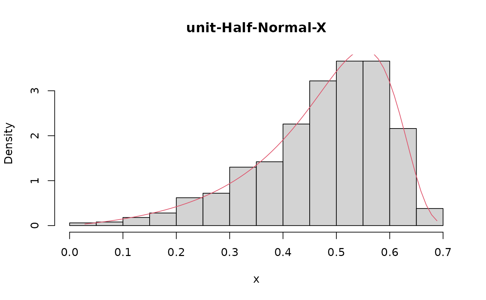

Density function, distribution function, quantile function and random number generation function for the unit-Half-Normal-X distribution reparametrized in terms of the \(\tau\)-th quantile, \(\tau \in (0, 1)\).
Usage
dughnx(x, mu, theta, tau = 0.5, log = FALSE)
pughnx(q, mu, theta, tau = 0.5, lower.tail = TRUE, log.p = FALSE)
qughnx(p, mu, theta, tau = 0.5, lower.tail = TRUE, log.p = FALSE)
rughnx(n, mu, theta, tau = 0.5)Arguments
- x, q
vector of positive quantiles.
- mu
location parameter indicating the \(\tau\)-th quantile, \(\tau \in (0, 1)\).
- theta
nonnegative shape parameter.
- tau
the parameter to specify which quantile is to be used.
- log, log.p
logical; If TRUE, probabilities p are given as log(p).
- lower.tail
logical; If TRUE, (default), \(P(X \leq{x})\) are returned, otherwise \(P(X > x)\).
- p
vector of probabilities.
- n
number of observations. If
length(n) > 1, the length is taken to be the number required.
Value
dughnx gives the density, pughnx gives the distribution function,
qughnx gives the quantile function and rughnx generates random deviates.
Invalid arguments will return an error message.
Details
Probability density function $$f(y\mid \alpha ,\theta )=\sqrt{\frac{2}{\pi }}\frac{\theta }{y\left(1-y\right) }\left( {\frac{y}{\alpha \left( 1-y\right) }}\right) ^{\theta }\mathrm{\exp }\left\{ -\frac{1}{2}\left[ {\frac{y}{\alpha \left( 1-y\right) }}\right] ^{2\theta }\right\}$$
Cumulative density function $$F(y\mid \alpha ,\theta )=2\Phi \left[ \left( \frac{y}{\alpha \left(1-y\right) }\right) ^{\theta }\right] -1$$
Quantile Function $$Q(\tau \mid \alpha )=\frac{\alpha \left[ \Phi ^{-1}\left( \frac{\tau +1}{2}\right) \right] ^{\frac{1}{\theta }}}{1+\alpha \left[ \Phi ^{-1}\left( \frac{ \tau +1}{2}\right) \right] ^{\frac{1}{\theta }}}$$
Reparametrization $$\alpha=g^{-1}(\mu )=\frac{\mu }{\left( 1-\mu \right) \left[ \Phi ^{-1}\left( \frac{\tau +1}{2}\right) \right] ^{\frac{1}{\theta }}}$$
References
Bakouch, H. S., Nik, A. S., Asgharzadeh, A. and Salinas, H. S., (2021). A flexible probability model for proportion data: Unit-Half-Normal distribution. Communications in Statistics: CaseStudies, Data Analysis and Applications, 0(0), 1--18.
Examples
set.seed(123)
x <- rughnx(n = 1000, mu = 0.5, theta = 2, tau = 0.5)
R <- range(x)
S <- seq(from = R[1], to = R[2], by = 0.01)
hist(x, prob = TRUE, main = 'unit-Half-Normal-X')
lines(S, dughnx(x = S, mu = 0.5, theta = 2, tau = 0.5), col = 2)

plot(ecdf(x))
lines(S, pughnx(q = S, mu = 0.5, theta = 2, tau = 0.5), col = 2)
 plot(quantile(x, probs = S), type = "l")
lines(qughnx(p = S, mu = 0.5, theta = 2, tau = 0.5), col = 2)
plot(quantile(x, probs = S), type = "l")
lines(qughnx(p = S, mu = 0.5, theta = 2, tau = 0.5), col = 2)